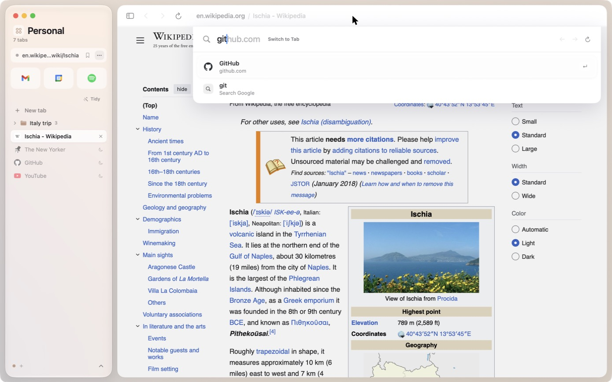

Pane stays out of your way
Most of a browser is things you don't need to see. Pane keeps them tucked away until you reach for them, so the page gets the whole window.

Built for how you browse
Keep work, school and home apart. Each space has its own tabs, its own color, and if you like, its own logins, so you can be signed into two accounts at once.
Drag tabs to reorder them, drop them into folders, or pull them to the top to pin. Tidy groups the rest by kind of site, and anything you stop using moves to the archive.

Links from Mail, Slack or a pinned Gmail open in a small window first. Read and close it, or keep the page with ⌘ Return.
Switch away from a video playing with sound and it floats in its own window. Muted clips and previews stay where they are.
Two pages side by side in one window. Drag the divider to give one more room.
Right-click to save a video, image, link or the whole page, straight to wherever you choose.
An eyedropper that copies the hex of anything on screen, and a font inspector that shows a page's type as you hover.
Import bookmarks and history from the browser you use now, in one click from Settings.
Private by default,
quiet by design
Ads and trackers are blocked before they load, inside the engine, so pages are faster too. Pane has no account, no analytics and nothing to sell. Your tabs and history stay on your Mac.
Made for your keyboard
Ready for a calmer web?
Download Pane for freeFor macOS 26 Tahoe on Apple silicon
Drag it inOpen Pane.dmg and drag Pane into your Applications folder.
Open it onceRight-click Pane and choose Open. macOS asks the first time, because Pane isn't from the App Store.
Say helloA short welcome shows you around. Updates arrive inside the app after that.